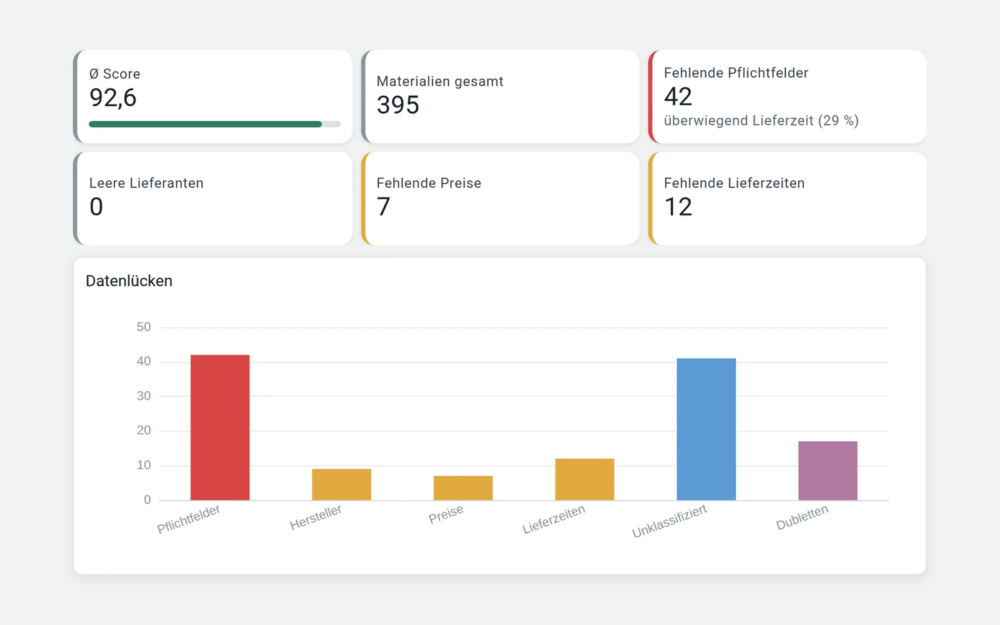
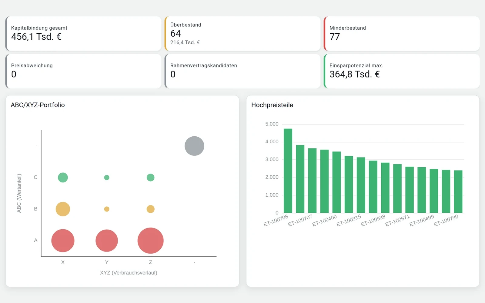
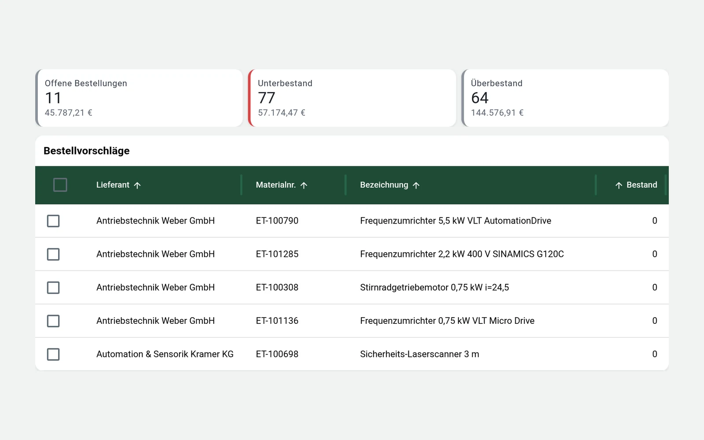
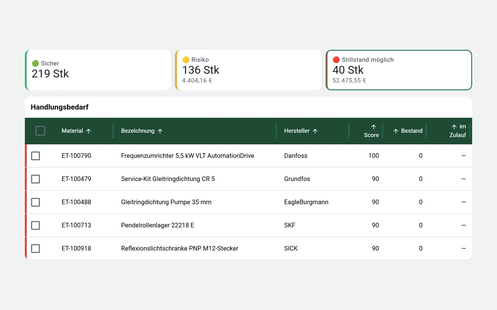

WK SmartParts
Software von Werringloer Komponentenmanagement
Die Plattform für Materialdaten, Ersatzteilmanagement und technische Lagerprozesse – für produzierende Unternehmen, die Datenqualität und Versorgungssicherheit dauerhaft steuern möchten.
Die fünf Säulen von WK SmartParts
Vom einzelnen Material bis zur Managementauswertung bleiben Informationen nachvollziehbar und entscheidungsfähig.

Datenqualität
Jedes Material wird sauber angelegt, klassifiziert und auf Dubletten geprüft – inklusive Pflichtfeldern und verknüpften Dokumenten.

Bestandsoptimierung
ABC-/XYZ-Analyse und Kritikalitätsbewertung zeigen, wo Sicherheitsbestände sinnvoll sind und wo Kapital in Obsoleszenz feststeckt.

Kosten und Preise
Preisvergleiche und Preisentwicklung machen sichtbar, wie viel Kapital tatsächlich in Beschaffung und Lager gebunden ist – Bestellvorschläge werden nach Lieferant gebündelt und freigegeben.

Lieferanten und Lieferzeit
Lieferzeiten und Lieferantenperformance im Blick, dazu Alternativteile für den Ernstfall – die Ampel im Bestandsrisiko zeigt, welche Ersatzteile einen Stillstand verursachen können.

Governance und Reporting
Rollen, Freigaben und ein lückenloser Audit-Trail sorgen für Nachvollziehbarkeit, Kennzahlen und Dashboards für den Überblick.
Die Einführung erfolgt stufenweise mit Rollen- und Rechtekonzept, verschlüsselter Übertragung, Backups und Protokollierung. Die Screenshots zeigen Beispieldaten.
Drei Ausbaustufen – wächst mit Ihren Prioritäten
Alle Stufen bauen aufeinander auf – Einstieg jederzeit möglich, Preis auf Anfrage.
Basis
Saubere Stammdaten als Fundament
- Materialanlage & Pflichtfelder
- Klassifizierung & Dublettenanalyse
- Dokumentenverknüpfung
Standard
Bestände, Kosten und Lieferanten im Blick
- ABC-/XYZ-Analyse & Kritikalität
- Preisvergleiche & Beschaffungskosten
- Lieferantenperformance & Alternativteile
Enterprise
Governance über mehrere Standorte
- Rollen, Freigaben & Audit-Trail
- Kennzahlen & Dashboards
- Mehrstandort, Inventur & mobile Datenerfassung
Typische Einsatzsituationen
-
Vor einer ERP-Migration
Materialstammdaten bereinigen und konsolidieren, bevor sie in ein neues System übernommen werden.
-
Bei steigenden Lagerkosten
Dubletten und Überbestände im Ersatzteillager aufdecken – als Hebel zur Kostenreduzierung.
-
Für den technischen Einkauf
Eine belastbare Übersicht über Lieferanten, Preise und Lieferzeiten als Verhandlungsgrundlage.
-
Zur Absicherung der Instandhaltung
Verlässlichere Ersatzteilverfügbarkeit durch saubere, konsolidierte Stammdaten.
Passt WK SmartParts zu Ihrer Situation?
Im kostenlosen Erstgespräch klären wir Ihre Ausgangslage – und ob WK SmartParts, eine Beratung oder beides der richtige Weg ist.